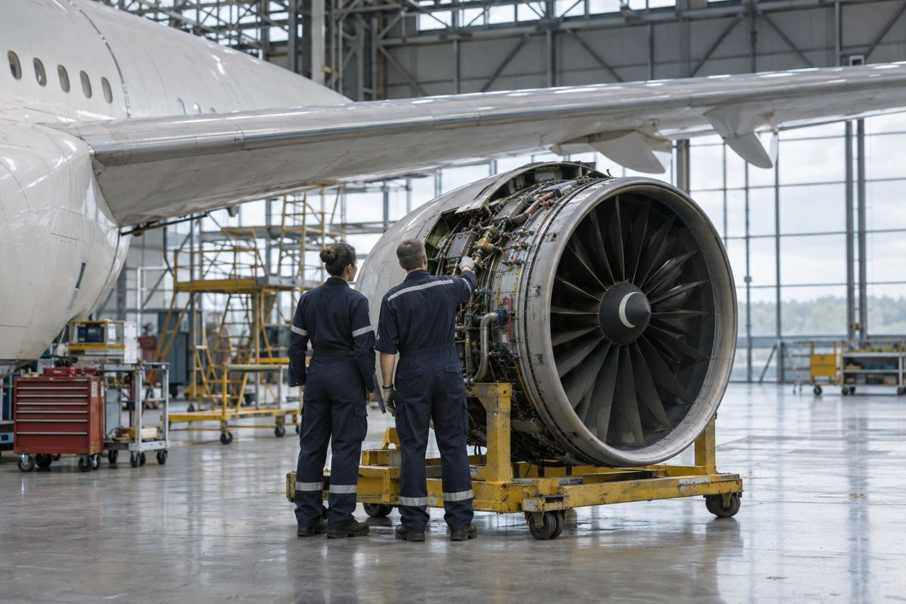

항공사 경영 / EXPLAINED
KLM 3분기 영업이익 늘었지만…비교 기준도 함께 바뀌었다
4억5800만 유로 실적을 발표했다. 작년 비교 수치는 새 회계 기준에 맞춰 재작성한 값이다.

KLM 그룹이 11월 5일 발표한 2026년 3분기 영업이익은 4억5800만 유로로, 전년 동기 비교치 3억5200만 유로보다 1억600만 유로 늘었다. 회사는 운임 수입 증가와 비용 절감이 개선에 기여했다고 설명했다. 다만 이번 비교에서 쓰인 작년 수치는 과거 발표 그대로가 아니라 새 회계 기준에 맞춰 다시 작성한 값이다. 이익 증가라는 결론과 숫자의 비교 조건을 함께 읽어야 한다.
KLM은 암스테르담을 중심으로 여객·화물 운항과 정비 사업을 하는 네덜란드 항공사다. 이번 발표 대상인 KLM 그룹 실적은 더 큰 에어프랑스-KLM 그룹 전체 실적과 구분된다. 한 브랜드의 여객 항공권 판매만으로 모든 숫자를 설명할 수도 없다. 회사는 여객, 화물, 정비 사업의 상황과 저비용 항공사 트랜사비아의 부담을 따로 설명했다.
수익이 늘어도 투자 여력이 충분한 것은 아니다
1~9월 누적 영업이익은 5억2600만 유로로, 작년 같은 기간 재작성 수치 3억2800만 유로보다 높았다. 매출은 9% 넘게 증가한 109억 유로, 공급 능력은 4.3% 증가했다. 모두 같은 1~9월 누적 기준의 설명이다. 매출 증가율과 공급 증가율은 다른 지표다. 공급을 늘린 정도와 실제로 벌어들인 돈의 변화가 같을 필요는 없으며, 매출이 늘었다고 그 증가분이 모두 이익으로 남는 것도 아니다.
회사는 3분기가 전통적으로 수익이 많이 나는 시기인데도 미래 투자에 필요한 수익성이 충분하지 않다고 밝혔다. 연료비와 높은 비용 구조, 운항 취약성을 부담으로 제시했고, 재무 건전성을 위해 이익률을 8%보다 높은 수준으로 끌어올려야 한다는 목표를 설명했다. 이 수치는 달성한 실적이 아니라 회사가 제시한 필요 수준이다. 특정 분기 이익과 장기적인 투자 능력은 구분해서 봐야 한다.
숫자를 바꿔 읽어야 하는 회계 전환
KLM은 2026년 반기 실적부터 IFRS 18을 조기 적용했다고 밝혔다. 의무 적용일인 2027년 1월 1일에 앞선 선택이다. 회사 설명에 따르면 기존 COI 대신 조정영업이익 AOP를 사용하며, 비교 가능성을 위해 2025년 숫자도 다시 정리했다. 따라서 예전에 저장한 자료의 영업이익과 이번 발표 수치를 바로 빼기보다 같은 기준으로 제시된 비교 수치를 사용해야 한다.
승객 입장에서 이 실적 발표가 곧바로 특정 항공편 취소나 운임 인상을 뜻하지는 않는다. 발표는 회사 전체의 경영 상황을 보여 주며 개별 예약의 변경 통지와는 다르다. 편집부의 분석으로는 정비 공급망과 운항 안정성에 관한 설명이 앞으로의 서비스 투자를 판단하는 데 유용하다. 다만 이 자료만으로 어느 노선의 정시성이 얼마나 좋아질지 계산할 수는 없다.
회사는 화물 부문이 안정적 운항과 수익률, 비용 관리의 도움을 받았다고 설명한 반면, 정비에는 세계 공급망 부족이 남아 있다고 밝혔다. 트랜사비아도 경쟁과 연료비, 운항 부담을 겪고 있다고 했다. 이는 회사가 설명한 사업별 상황으로, 모든 부문이 같은 속도로 개선됐다는 의미는 아니다. 구체적인 투자 완료 시점이나 개별 승객이 체감할 변화는 별도의 실행 공지가 나와야 확인할 수 있다.